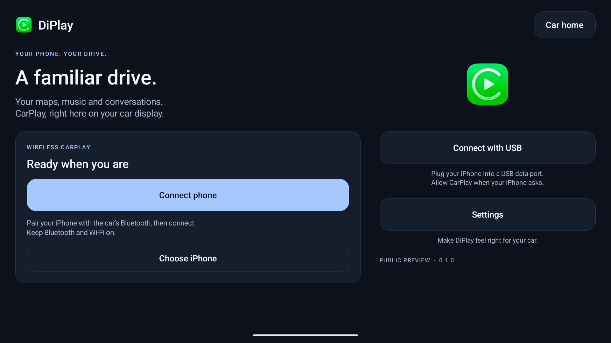
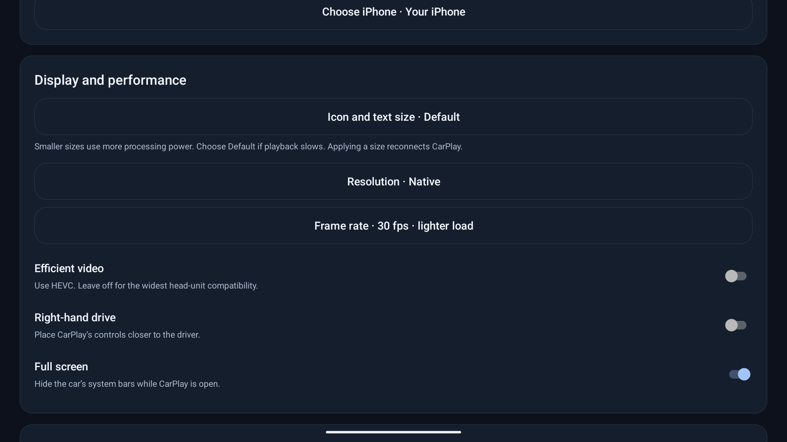

Tu iPhone.
En la pantalla de tu coche.
Mapas, música y conversaciones en la pantalla del coche. DiPlay ofrece CarPlay por USB e inalámbrico en unidades Android compatibles, con la interfaz familiar de DiAuto.
Sin jailbreak, adaptador, cuenta ni servidor de autenticación.
Instala la app en el coche, no en el iPhone. La conexión inalámbrica requiere Android 10 o posterior y Wi-Fi Direct funcional. La compatibilidad depende del equipo, el firmware y la versión de iOS.
Una experiencia familiar
{kind=link}

{kind=link}

Instalar en el coche
- Con el coche estacionado, descarga el APK e instálalo mediante el método que admita tu unidad.
- Abre DiPlay y concede los permisos solicitados de Bluetooth, Wi-Fi/ubicación y micrófono.
- Empareja el iPhone desde los ajustes Bluetooth del coche. Activa Bluetooth y Wi-Fi, pulsa Connect phone, selecciona el iPhone y permite CarPlay en el teléfono.
- Para USB, usa un cable de datos y pulsa Connect with USB. Acepta las solicitudes de USB, confianza o VPN local que aparezcan.
No necesitas ADB para el uso diario. El método de instalación del APK depende del coche. No hay que introducir direcciones MAC.
Guía de instalación y conexión ↗En esta versión
- CarPlay por USB e inalámbrico con autenticación local.
- Preferencia por 5 GHz, alternativa con canales fijos de 2,4 GHz y memoria de configuraciones correctas.
- Ajustes de iconos, texto, resolución y frecuencia de imagen; aplicar vuelve a conectar CarPlay.
- Informes de diagnóstico guardados localmente para compartir cuando tú decidas.
Antes de probar
Versión preliminar pública sin certificación de Apple. Usa una identidad de accesorio experimental obtenida de firmware público; no se garantiza su aceptación futura. Algunos equipos aún presentan tirones o no aplican los cambios de tamaño de iconos. Empieza con 30 fps y HEVC desactivado; reduce la resolución si hace falta.
Recibe novedades
Noticias y nuevas versiones en Telegram.
Actualizaciones y firma
La versión 0.1.0 utiliza la misma clave de firma que las betas privadas de DiPlay. Instálala sobre la versión actual para conservar los ajustes. El código, las instrucciones de compilación y las sumas de comprobación acompañan al lanzamiento.